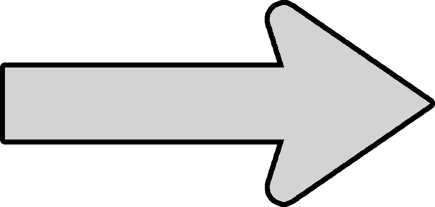
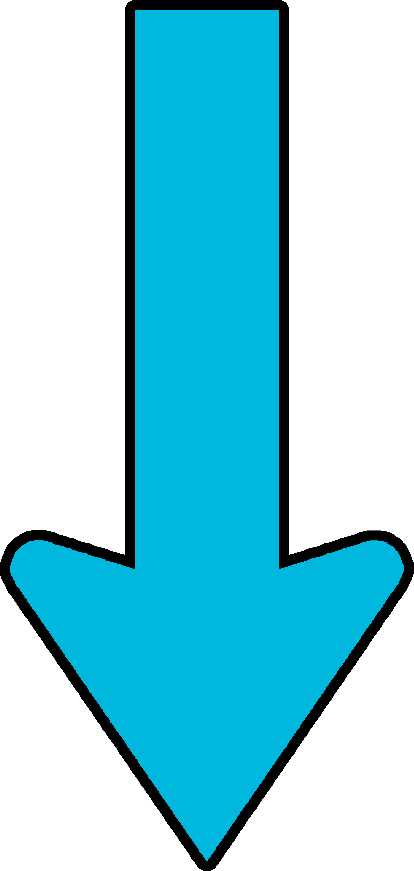

Zu Beginn der Therapie  Heute
Allein (emotionale) Einsamkeit
Zu Hause "gefangen"
Energie- und Antriebslosigkeit
Schwermut, Hoffnungslosigkeit
Keine Ziele / Motivation

Emotionale Verbindung / Nähe zu Freundin
Emanzipation von Familie / zu Hause
Mehr Enenergie und Unternehmungslust
Mehr Freude und hoffnungsvoller in Bezug auf die Zukunft
Ziele: Beziehung mit Freundin pflegen, Ausbildung / Studium -> Job in IT
Kein Selbstvertrauen
Kein Job, kein Geld -> Abhängigkeit von Eltern
Soziale Phobie, kaum soziale Interaktion, Beziehungen
Verdrängung von negativen Emotionen & Gedanken durch Schlaf / Medien-konsum
Wachsendes Selbstvertrauen
Selbstbestimmung / Unabhängigkeit durch Wohnung, Arbeit in Karlsruhe -> "Freiheit"
Steigerung sozialer Kompetenz
Diversere Freizeitgestaltung: Gitarre, Kochen, Tischtennis, Unternehmungen mit Freundin
Zu Beginn der Therapie <---> Heute
Allein (emotionale) Einsamkeit
Zu Hause "gefangen"
Energie- und Antriebslosigkeit
Schwermut, Hoffnungslosigkeit
Keine Ziele / Motivation
Emotionale Verbindung / Nähe zu Freundin
Emanzipation von Familie / zu Hause
Mehr Enenergie und Unternehmungslust
Mehr Freude und hoffnungsvoller in Bezug auf die Zukunft
Ziele: Beziehung mit Freundin pflegen, Ausbildung / Studium -> Job in IT
Kein Selbstvertrauen
Kein Job, kein Geld -> Abhängigkeit von Eltern
Soziale Phobie, kaum soziale Interaktion, Beziehungen
Verdrängung von negativen Emotionen & Gedanken durch Schlaf / Medien-konsum
Wachsendes Selbstvertrauen
Selbstbestimmung / Unabhängigkeit durch Wohnung, Arbeit in Karlsruhe -> "Freiheit"
Steigerung sozialer Kompetenz
Diversere Freizeitgestaltung: Gitarre, Kochen, Tischtennis, Unternehmungen mit Freundin
1st Modal
Open Modal
×
Modal Header1
Some text in the Modal Body
Some other text...
2nd Modal
Open Modal
×
Modal Header2
Some text in the Modal Body
Some other text...